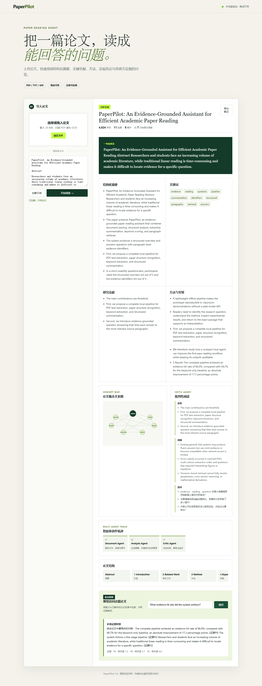
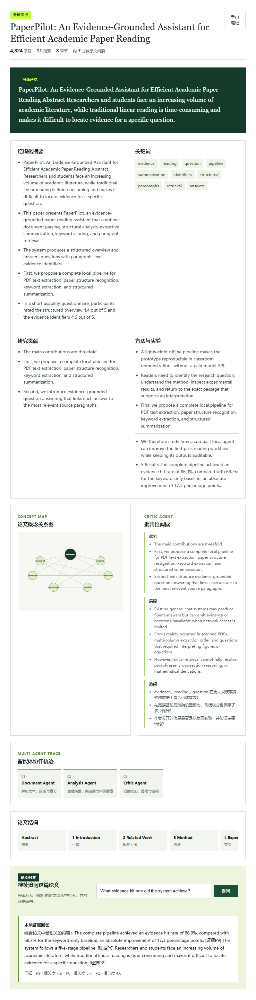

功能
- 支持 PDF / TXT / Markdown。
- 抽取摘要、关键词、方法、结果和局限。
- 问答时返回相关证据片段。
- 可以导出 Markdown 阅读笔记。
Local retrieval / paper reading
一个轻量的论文阅读助手原型，主要验证本地解析、摘要、证据检索、问答和笔记导出流程。它更适合快速试功能，也方便继续改成完整 RAG 项目。

cd projects/paperpilot-lite python -m pip install -r requirements.txt python app.py
默认打开：`http://127.0.0.1:8765`。
paperpilot-lite/
app.py
paper_agent/
core.py
llm.py
orchestrator.py
static/
tests/
docs/assets/
samples/

目录里保留了源码、测试、示例和截图；没有提交真实密钥和本地缓存。基础流程不依赖模型 API，配置后可以接入 LLM 做更完整的问答。